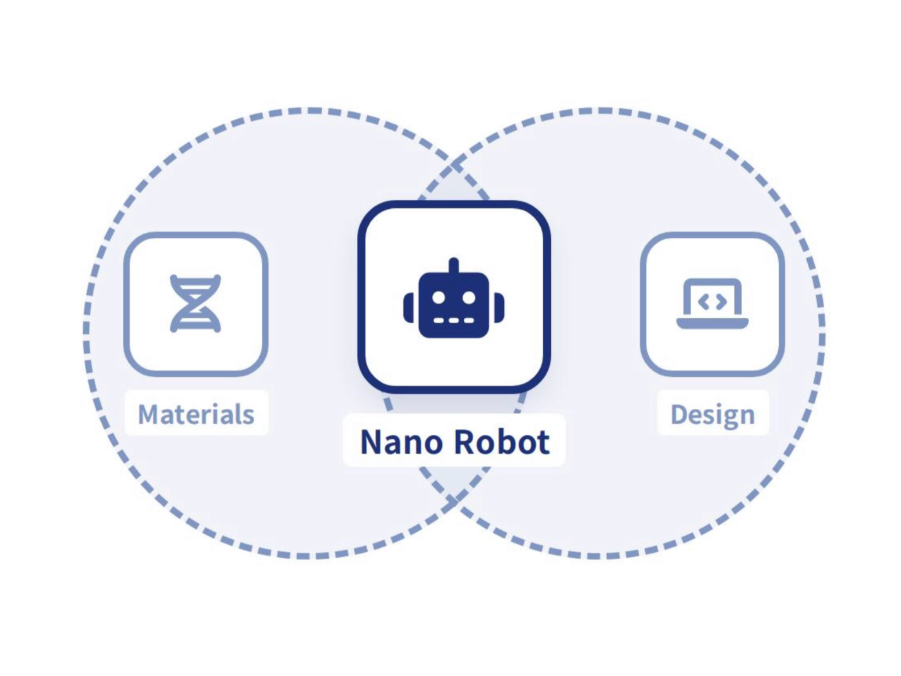

ABOUT BIOMOD
大会について / 過去のプロジェクト
BIOMODとは？
BIOMOD（Bio-Molecular Design Competition）は、大学の学部生を対象とした、生体分子ナノテクノロジーの国際ロボットコンテストです。
2011年にハーバード大学のWyss研究所によって創設され、世界中から未来の科学者・エンジニアを目指す学生チームが集まり、そのアイデアと技術力を競い合います。
何を創る大会なのか？
学生たちは、DNA、RNA、タンパク質といった「生き物の体を作っている微小な材料」を意図した通りに設計・制御し、ナノサイズのロボットや分子システムを創り出します。
例えば、「がん細胞だけを見つけて薬を届けるカプセル」や「特定の成分に反応して動くナノモーター」など、医療や環境、材料工学の未来を変えるアイデアを形にします。

審査の仕組み
大会での評価は、実験データの正確さだけでなく、以下の3つの総合力で審査されます。
-
・
ウェブサイト（Wiki）の制作：
研究内容を世界に向けて分かりやすく解説するサイトの構築 -
・
紹介動画の制作：
プロジェクトの魅力を伝える3分間のYouTube動画 -
・
プレゼンテーション：
大会当日に英語で行う、研究成果の発表
詳しくはBIOMOD公式ホームページをご参照ください。
Bow-like DNA bending method using Avidin–Biotin binding
（アビジン‐ビオチン結合を利用した弓状DNA変形法）
従来のDNAオリガミを曲げる手法は、周囲の環境変化に弱く設計が複雑になるという課題を抱えていました。そこで本プロジェクトでは、極めて強固で安定した「アビジン-ビオチン結合」を利用し、DNAを弓の弦のように引き絞って湾曲させる新しいツールを提案します。
結合部位の距離やリンカーの長さを調整することで曲げ角度を精密に制御し、あらゆる環境下で安定するDNA3D曲面構造の自在な設計を目指しています。
Micro Pill Bug
がんなどの早期発見の鍵として注目されるmiRNAですが、生体内の酵素（RNase）によって容易に分解されてしまうため、不安定なmiRNAの研究はこれまで困難でした。
本プロジェクトでは、ダンゴムシのように丸まって標的を保護する分子ロボット「Nano Pill Bug」を開発しました。DNAオリガミの曲げ応力をトラップのように利用することで、極微量のmiRNAを瞬時に捕捉・カプセル化し、酵素による分解から守り抜く新しいデバイスの形を提案します。